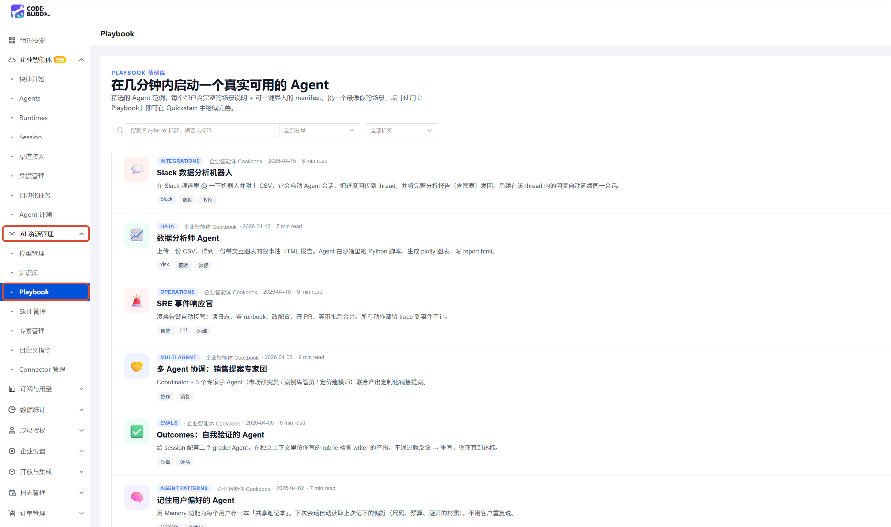

Playbook
概述
Playbooks 展示了预配置的工作流模板，帮助你快速上手。面向泛开发者：产品经理、设计师以及任何希望借助 CodeBuddy / WorkBuddy 完成任务但未必精通提示词工程的用户。Playbooks 将上下文、工具和指令打包为可复用的模板，让你在处理常见任务时无需从零开始。

一个 Playbook 由以下配置组成：
| 配置项 | 说明 | 示例 |
|---|---|---|
| 名称 | Playbook 的显示名称 | Slack 数据分析机器人 |
| 模型 | 使用的模型，支持指定或自动选择 | auto |
| Agent ID | 唯一标识符，用于引用和调用该 Playbook | slack-data-bot |
| System Prompt | 引导 Agent 行为的背景上下文和指令，定义角色、工作流程和输出规范 | 见下方示例 |
text
System Prompt 示例：
你是数据分析师，运行在沙箱容器中。
用户在 Slack thread 里上传一份 CSV，
已挂载到 /mnt/session/uploads/。请：
1. 先用 pandas 读前几行确认 schema
2. 运行 Python 脚本聚合关键指标
3. 用 plotly 做 3 个图表
4. 将所有内容写到
/mnt/session/outputs/report.html（自包含、内嵌 CSS）
5. 完成后回复 "Saved: report.html"
保持简洁专业，先抛结论再讲过程。浏览与使用
打开 Playbooks 面板
进入企业管理后台，在左侧边栏找到 AI 资源管理-Playbooks。
选择 Playbook
- 点击某个 Playbook，在详情卡片中查看 Manifest 摘要、场景说明、工作流设计、SDK调用范例等信息。
- 点击 使用此Playbook创建Agent 按钮，进入新建Agent页面，使用该模板创建企业智能体。
说明
企业智能体（CloudAgent）配置与使用可参考企业智能体
配置说明
当你使用选中 Playbook 的创建Agent时，以下配置会自动生效：
System Prompt 注入
Playbook 的 System Prompt 会被注入对话上下文，为 Agent 提供与所选工作流匹配的领域知识、角色指令和行为引导。
text
System Prompt 示例（概念性）：
你是一位专注于 PRD 撰写的产品经理助手。
请帮助用户将产品想法转化为结构化、可执行的需求文档。
文档需始终包含背景、用户故事、功能需求以及成功指标等章节。MCP 配置
如果 Playbook 指定了 MCP 服务器，这些服务器会在对话会话中激活，使 Agent 能够访问外部 API、数据库或服务。例如连接设计工具或查询分析数据。
Skill 配置
如果 Playbook 定义了专项技能，这些能力会在对话期间加载并可供 Agent 使用。
注意事项与重点提示
信息收集与使用
| 收集项 | 类型 | 用途 |
|---|---|---|
| 企业账号信息（登录凭据） | 必要 | 登录企业管理后台，浏览、选择和创建基于 Playbook 的企业智能体 |
| Playbook 模板配置（System Prompt、模型、Agent ID） | 必要 | 定义 Agent 的角色、行为模式、工作流程和调用标识 |
| MCP 服务器连接配置（URL、认证凭据） | 必要 | 激活 Agent 对话会话中的外部服务访问能力，如连接设计工具、数据库或第三方 API |
| Skill 能力定义 | 必要 | 在对话期间加载专项技能，扩展 Agent 的功能边界 |
| 对话交互内容 | 非必要 | 仅在用户与基于 Playbook 创建的 Agent 进行对话时涉及，用于上下文理解和响应生成 |
类型判定标准：
- 「必要」：使用 Playbook 创建和运行企业智能体时必须提供的配置信息（如企业账号、模板配置、MCP 连接、Skill 定义）
- 「非必要」：仅在用户与已创建的 Agent 开展实际对话时才产生的数据（如对话消息、上传文件、操作指令）
权限边界
- 基于 Playbook 创建的 Agent 运行在企业沙箱环境中，访问范围受 Agent 自身配置和企业权限策略双重约束
- MCP 服务器的访问范围取决于您在 Playbook 中配置的服务端点和凭据，不会超出您授权的服务边界
- Agent 的行为和输出受 System Prompt 约束，不会执行范围外的操作
安全提示
- Playbook 的 System Prompt 定义了 Agent 的行为边界，建议在创建 Agent 时仔细审核 Prompt 内容，确保指令安全合规
- MCP 服务器连接涉及外部服务访问，请使用最小权限原则配置凭据，避免使用高权限账号
- Playbook 模板来自平台预置，请从可信来源选择和启用；自定义模板需审慎评估后再投入使用
- 不再使用的 Agent 建议及时停用或删除，并撤销关联的 MCP 服务器授权
积分消耗提醒
Playbook 模板的浏览和选择不消耗积分；基于 Playbook 创建 Agent 后，在对话会话中调用模型、执行代码、访问外部服务等操作会消耗相应积分。
第三方共享
- Playbook 模板本身不包含第三方数据，仅为配置框架
- 当 Playbook 配置了 MCP 服务器后，Agent 将在您的授权范围内与对应第三方服务交互
- 第三方服务的可用性、数据准确性和安全性由其自身负责
免责声明
- Playbook 模板为通用的工作流框架，具体使用时产生的结果取决于 System Prompt 设计、模型选择和数据输入，客户端不对具体输出内容的准确性承担责任
- 基于 Playbook 创建的 Agent 在沙箱中运行，其行为受配置约束，但仍建议在对外发送、写入或修改数据前进行人工确认
- 第三方 MCP 服务的接口变更或不可用可能导致 Agent 功能异常，请关注对应服务的状态更新
使用建议
- 选择 Playbook 前先查看 Manifest 摘要和场景说明，确认模板与您的实际需求匹配后再创建 Agent
- System Prompt 是决定 Agent 行为质量的核心要素，建议在模板基础上根据业务场景补充领域特定指令和输出规范
- 为 Agent 配置 MCP 服务器时，优先使用只读权限的凭据；仅在业务确需写入或修改外部数据时才授予写入权限
- 创建 Agent 后建议先在非关键场景中测试，验证 System Prompt、MCP 和 Skill 的协同表现，确认无异常后再投入正式使用
- 定期检查已启用的 Agent 列表，清理长期未使用或已过时的实例，降低不必要的资源消耗和安全隐患
- 如果 Playbook 模板内置了文件读写指令，注意 Agent 对文件系统的操作范围，避免意外覆盖或删除重要文件